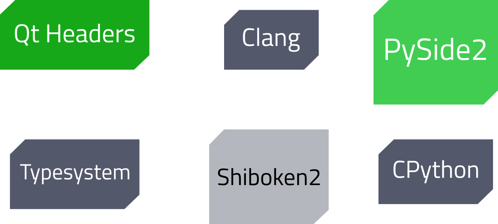
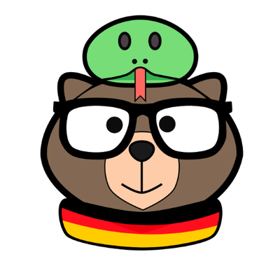
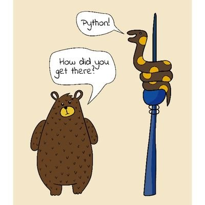
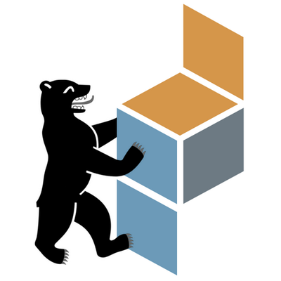

Unleash the power of C++ in Python
A guide through the bindings generation process
Dr. Cristián Maureira-Fredes
Software Engineer @ TQtC
Source and slides
github.com/cmaureir/unleash_cppC++
- General purpose
- Multi paradigm
- Statically typed
- Compiled
- Provides low-level memory manipulation
- Code readability ???
Python
- General purpose
- Multi paradigm
- Dynamically typed
- Interpreted
- Automatic memory management
- Code readability
if __name__ == "__main__":
print("Hello EuroPython 2019")
#include <iostream>
int main() {
std::cout << "Hello EuroPython 2019";
return 0;
}
template <bool C, typename TR, typename FR>
class if_;
template <typename TR, typename FR>
struct if_<true, TR, FR>{ typedef TR result;};
template <typename TR, typename FR>
struct if_<false, TR, FR> { typedef FR result;};
int main() {
typename if_<true, int, void*>::result n(3);
typename if_<false, int, void*>::result p(&n);
typedef typename if_<(sizeof(void *) > sizeof(uint32_t)),
uint64_t, uint32_t>::result i_ptr_t;
i_ptr_t c_p = reinterpret_cast<i_ptr_t>(p);
}
Compile-time if Template Meta Programming (Wikibooks)
(╯°□°）╯︵ ┻━┻C++11: auto and decltype
const std::vector v(1);
auto a = v[0]; // a: type int
auto c = 0; // c: type int
auto d = c; // d: type int
decltype(c) e; // e: type int, from c
decltype((c)) f = c; // f: type int&, (c) is an lvalue
decltype(0) g; // g: type int, 0 is an rvalue
C++11: for loops
std::vector<int> v {1, 2, 3, 4, 5};
// Old way
for (int i = 0; i < v.size(); i++)
x += v[i];
// or with an iterator...
// getting ints from v
for (int &i : v)
x += i;
// using type inference
for (auto &i : v)
x += i;
C++11: lambda functions
// [](int x, int y) -> int { return x + y; }
// [&x](int i) -> int { x += i; }
std::vector<int> v{ 1, 2, 3, 4, 5 };
int x = 0;
std::for_each(begin(v),
end(v),
[&x](int i) {
x += i;
});
C++20 and Python: for
// ranges-v3
#include <range/v3/all.hpp>
using namespace std;
namespace v = ranges::view;
for (auto i : v::ints(0, 5))
cout << i << endl;
for i in range(0, 5):
print(i)
C++20 and Python: palindrome
#include <range/v3/all.hpp>
namespace r = ranges;
namespace v = r::view;
bool is_palindrome(std::string_view word)
{
return r::equal(word, v::reverse(word));
}
def is_palindrome(word):
#return word == word[::-1]
return word == "".join(reversed(word))

Extending Python with C++
Looking under Python
// Include/object.h
typedef struct _object {
_PyObject_HEAD_EXTRA
Py_ssize_t ob_refcnt;
struct _typeobject *ob_type;
} PyObject;
Creating a module
Let's look at the code.
so...
What is Qt?
Qt /kjut/
Cross platform C++ framework, for UI and more.


...but what about Python?
It's around 2007...
Which options do we have?
The story of PySide
2008
Qt4Development
(PySide)
2016
Backto the
Qt Project
2015
Qt5Port
(PySide2)
2018
Released(Qt for Python)
How do we do it?
Shiboken
死某剣
Other nice options
- pybind11 - pybind11.readthedocs.io
- cffi - cffi.readthedocs.io
- cppyy - cppyy.readthedocs.io
- sip - riverbankcomputing.com/software/sip
Creating a more useful module
Let's look at the code.
Summary
| Type | C++ | Python | License | Support | |
|---|---|---|---|---|---|
| boost::python | Interface | C++11+ | 2.7, 3.0 | BSL-1 | Boost |
| SWIG | Code gen | C++11+ | 1.5+ | GPL3 | - |
| shiboken | Code gen | C++11 (*) | 2.7, 3.5+ | LGPLv3 | Qt |
| sip | Code gen | C++11 (*) | 3.5+ | GPLv3 | Riverbank |
| pyBind11 | Interface | C++11 (*) | 2.7, 3.x | BSD-3 | - |
| cffi | Interface | C89, C99 (*) | 2.6+, 3.0+ | MIT | PyPy |
| cppyy | Interface | C++11+ | 2 and 3 | UC | - |
Q&A
Qt for Python
pyside.org
maureira.xyz
@cmaureir

Support your local groups!

  